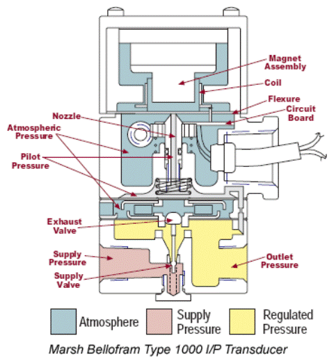

Un sistema di controllo del feedback
Introduzione
Nella nostra discussione precedente, abbiamo approfondito il campo delle applicazioni di controllo di processo, con casi specifici che coinvolgono l’uso di motori CC e CC. In questo taccuino rivisiteremo questi concetti fondamentali ed espanderemo ulteriormente la nostra esplorazione con uno sguardo approfondito a un’altra applicazione fondamentale: lo scambiatore di calore.
Revisione dei concetti di controllo dei processi
Il controllo del processo può essere caratterizzato dalla regolazione di alcune variabili. Queste variabili includono: - Temperatura - Pressione - Livello del liquido - Composizione
Queste applicazioni sono spesso influenzate da fattori con costanti di tempo elevate. Pertanto, i dispositivi pneumatici, che possiedono intrinsecamente caratteristiche di risposta più lente, sono particolarmente adatti per queste applicazioni.
Dispositivi pneumatici: un riepilogo
1. Valvola di controllo - Ingresso: segnale elettrico - Uscita: segnale di pressione o alterazione della posizione dell’asta di comando - Scopo: regolare il flusso del fluido al processo
2. Trasduttore elettropneumatico - Un dispositivo che si interfaccia tra l’attuatore (valvola di controllo) e il controller elettronico (che potrebbe essere basato su Op-Amp o su computer digitale). - Ingresso: segnale elettrico - Uscita: segnale di pressione adatto alla valvola di controllo (attuatore)
Vale la pena notare che mentre ho menzionato che la costruzione del trasduttore elettropneumatico è abbastanza identica in linea di principio a un dispositivo elettroidraulico, ci stiamo concentrando su una descrizione schematica a blocchi per semplicità.
Uno sguardo alla storia del controllo dei processi
Storicamente, i controllori erano posizionati in una sala di controllo dedicata, separata dal processo. Ciò richiede la trasmissione del segnale dal processo alla sala di controllo e viceversa.
Figura: diagramma che mostra la trasmissione dei segnali tra processo e sala controllo
Prima degli anni ’50 questa comunicazione veniva facilitata prevalentemente da segnali pneumatici o di pressione dell’aria. Questo metodo può ancora essere osservato nelle industrie più vecchie con estese reti di tubi. Tuttavia, con l’evoluzione della tecnologia, le industrie più nuove hanno gradualmente adottato controller elettronici o digitali, passando dai segnali pneumatici a quelli elettrici per la comunicazione.
Evoluzione degli standard di trasmissione nel controllo di processo
Nell’ambito del controllo di processo, in particolare negli ambienti industriali, la trasmissione di informazioni tra controller, sensori, attuatori e altre apparecchiature è essenziale. Nel corso degli anni, gli standard e i mezzi di questa trasmissione hanno subito una significativa trasformazione.
- anni ’50: lo standard industriale prevalente per la trasmissione del segnale era compreso tra 3 e 15 psi (libbre di pressione per pollice quadrato).
- Dopo gli anni ’50: sono emersi una miriade di standard di trasmissione, come ±10 volt, da 1 volt a 5 volt, da 1 milliampere a 5 milliampere e così via.
- Era moderna: la standardizzazione ha gravitato in gran parte verso l’intervallo compreso tra 4 milliampere e 20 milliampere per scopi di trasmissione.
Trasmissione pneumatica:
1. Segnali pneumatici (pre-anni ’50): Prima degli anni ’50, la comunicazione tra la sala di controllo e il processo utilizzava spesso segnali pneumatici. Questi sono tipicamente rappresentati in termini di pressione atmosferica.
Standard: lo standard industriale per questi segnali pneumatici era generalmente compreso tra 3 e 15 psi (libbre per pollice quadrato).
Infrastruttura: I sistemi pneumatici richiedevano tubi per trasmettere questi segnali di pressione tra i dispositivi. Questi tubi sono il motivo per cui, visitando le industrie di processo più vecchie, vedresti una rete di tubi che collegano diverse apparecchiature.
Limitazioni: I sistemi pneumatici sono generalmente lenti a rispondere a causa della natura fisica dell’aria o del gas compresso o decompresso. Ciò li rende adeguati per sistemi con costanti di tempo elevate ma non per applicazioni a risposta rapida.
Trasmissione elettronica:
2. Segnali elettronici (dagli anni ’50 in poi): Con l’evoluzione della tecnologia, i segnali elettronici ed elettrici hanno cominciato a sostituire le trasmissioni pneumatiche.
Primi standard: Prima che avvenisse una standardizzazione a livello di settore, esistevano diversi standard di segnali elettronici come ±10 volt, da 1 volt a 5 volt e una varietà di segnali di corrente come da 1 milliampere a 5 milliampere.
Standard 4-20 mA: questo è diventato lo standard dominante per la trasmissione di corrente. È degno di nota perché un segnale da 4 mA può essere utilizzato per indicare lo stato “spento” di un sistema, mentre qualsiasi valore sopra indica uno stato “attivo”. Ciò garantisce che anche se il segnale scende al minimo (4 mA), è comunque rilevabile e distinto da una perdita completa del segnale o da una rottura del cavo.
Vantaggi: I segnali elettronici possono essere trasmessi più velocemente, con una minore perdita di energia e su distanze maggiori rispetto ai segnali pneumatici. I sistemi elettronici sono inoltre meno influenzati dai cambiamenti ambientali.
Trasmissione digitale:
3. Segnali digitali (dalla fine del XX secolo in poi): Con l’avvento dei computer e della tecnologia digitale, la segnalazione digitale cominciò ad emergere nel controllo industriale.
Controller basati su microprocessore: questi controller sono in grado di gestire operazioni complesse, supportare una varietà di protocolli di comunicazione e interagire con la moderna infrastruttura digitale.
Protocolli: La comunicazione digitale ha introdotto una gamma di protocolli come Modbus, Profibus e, successivamente, standard basati su Ethernet come EtherCAT e PROFINET.
Vantaggi: I segnali digitali sono immuni al rumore e possono trasportare una grande quantità di dati. Possono essere integrati con l’infrastruttura IT, consentendo meccanismi di controllo, monitoraggio e reporting più sofisticati.
Implicazioni:
L’evoluzione dalla trasmissione pneumatica a quella elettronica a quella digitale rappresenta non solo un cambiamento nella tecnologia ma anche nella complessità e nella capacità dei sistemi di controllo di processo. I sistemi moderni possono gestire più variabili, integrarsi con altri sistemi IT e offrire una precisione di controllo senza precedenti.
Sebbene la transizione abbia reso possibili sistemi più avanzati e complessi, richiede anche nuove competenze per la manutenzione, l’integrazione e la risoluzione dei problemi. È essenziale che i moderni ingegneri di controllo comprendano non solo gli aspetti tradizionali dei loro processi, ma anche la comunicazione digitale e gli aspetti IT.
ü§î Domanda pop-up: Perch√© √® stato adottato lo standard 4-20 mA rispetto ad altri standard di segnali elettronici nel settore del controllo di processo?
Risposta: Lo standard 4-20 mA offre vantaggi distinti: 1. Un segnale da 4 mA può indicare uno stato “spento”, rendendolo distinguibile da una completa perdita di segnale o da una rottura del cavo. 2. Segnali di corrente come questi sono meno influenzati dalla resistenza dei cavi lunghi, garantendo l’integrità del segnale su lunghe distanze. 3. Sono anche meno suscettibili al rumore elettrico rispetto ai segnali di tensione.
Diagramma a blocchi della trasmissione del segnale
Immagina un tipico processo in cui viene misurata una quantità (temperatura, livello del liquido o composizione). Questo segnale, una volta elaborato da un sensore, verrebbe convertito in un segnale elettrico. La maggior parte di queste uscite dei sensori sono segnali di tensione. Ma per la trasmissione, questi segnali di tensione vengono spesso convertiti in segnali di corrente, principalmente perché i segnali di corrente sono meno suscettibili al rumore.
- Sarà necessaria la conversione da tensione a corrente nel punto del sensore,
- Sarà necessaria la conversione da corrente a tensione sul controller.
Circuito di condizionamento del segnale (o trasmettitore)
Il condizionamento del segnale è un aspetto fondamentale dell’elettronica e della strumentazione. Si riferisce al processo di modifica di un segnale in modo tale da soddisfare i requisiti della fase o del dispositivo successivo in un sistema. Questo processo può comportare amplificazione, filtraggio, conversione, adattamento della gamma, isolamento e qualsiasi altra funzione che ottimizzi il segnale per un’ulteriore elaborazione.
- Questa unità è composta da componenti di condizionamento del segnale e di guida della linea.
- Il suo ruolo è convertire il segnale elettrico del sensore in un formato compatibile con il controller, adattando al tempo stesso la distanza tra il processo e il controller.
Nota sulla terminologia
Nel linguaggio del controllo di processo, l’interfaccia tra il processo e il controllore è spesso definita “trasmettitore”. Questa parola è usata in modo intercambiabile con “sensore” in tutta la nostra discussione, ma ricorda che in un contesto più ampio, il trasmettitore può includere anche il componente sensore.
Componenti e tipi di condizionamento del segnale:
Amplificatori: questi sono i condizionatori di segnale più comuni. Aumentano l’ampiezza di un segnale. Ad esempio, i sensori che producono una tensione di uscita molto bassa (come le termocoppie) spesso necessitano di amplificazione prima che i loro segnali possano essere letti dalla maggior parte dei convertitori analogico-digitali (ADC).
- Amplificatori operazionali (Amplificatori operazionali): Ampiamente utilizzati nei circuiti di condizionamento del segnale grazie alla loro versatilità. Possono essere configurati per una gamma di funzioni come circuiti invertenti, non invertenti, differenziali, integratori e differenziatori.
Filtri: i filtri vengono utilizzati per rimuovere le frequenze indesiderate da un segnale.
- Filtri passa-basso: Consentono il passaggio dei segnali con una frequenza inferiore a una determinata frequenza di taglio e attenuano le frequenze superiori alla frequenza di taglio.
- Filtri passa-alto: Fanno il contrario, attenuando le frequenze al di sotto della frequenza di taglio e consentendo a quelle al di sopra di passare.
- Filtri passa banda: Consentono il passaggio solo ai segnali entro un determinato intervallo di frequenza.
Convertitori analogico-digitali (ADC): Convertono i segnali analogici in un formato digitale che può essere elaborato da apparecchiature digitali come i computer.
Convertitori tensione-corrente e corrente-tensione: questi convertitori sono utili per trasmettere segnali su lunghe distanze. Ad esempio, lo standard del loop di corrente da 4-20 mA negli ambienti industriali.
Linearizzatori: alcuni sensori hanno uscite non lineari, ovvero la relazione tra la quantità fisica misurata e l’uscita del sensore non è una linea retta. I linearizzatori vengono utilizzati per correggere queste uscite.
Isolatori: sono fondamentali nelle applicazioni in cui è essenziale interrompere il percorso elettrico tra due circuiti, pur continuando a trasferire il segnale. Possono proteggere le apparecchiature sensibili dai picchi di tensione e ridurre i circuiti di terra.
Multiplexer (MUX): quando è necessario inviare più segnali attraverso un singolo ADC, è possibile utilizzare un multiplexer. Seleziona un segnale alla volta da passare all’ADC.
Importanza del condizionamento del segnale:
Precisione: Il condizionamento migliora la precisione dei dati finali garantendo che il segnale sia preparato in modo ottimale per l’elaborazione.
Protezione: isolando i segnali, le apparecchiature sensibili possono essere protette da potenziali danni dovuti a problemi elettrici come sovratensioni o loop di terra.
Compatibilità: garantisce che i segnali provenienti da vari sensori e sorgenti possano essere resi compatibili con un’ampia gamma di apparecchiature di elaborazione e visualizzazione.
Prestazioni migliorate: i filtri possono aiutare a ridurre il rumore, gli amplificatori possono amplificare i segnali deboli e gli ADC possono facilitare l’elaborazione digitale.
Affidabilità: un condizionamento adeguato può rendere un sistema più robusto e affidabile riducendo al minimo l’impatto di rumore elettrico, interferenze o altri problemi che potrebbero altrimenti distorcere o degradare il segnale.
Applicazioni:
I circuiti di condizionamento del segnale sono onnipresenti nei sistemi elettronici. Alcune applicazioni comuni includono:
- Automazione industriale: garantire che i segnali dei sensori siano elaborati correttamente per i sistemi di controllo.
- Elettronica medica: miglioramento dei segnali provenienti dai sensori biomedici.
- Sistemi di comunicazione: preparazione dei segnali per la trasmissione o la ricezione.
- Elettronica di consumo: ad esempio, nell’elaborazione audio nelle radio o nei lettori musicali.
In sintesi, il condizionamento del segnale consiste nel preparare un segnale affinché sia ​​perfetto per la fase successiva di elaborazione, garantendo che i dati finali siano accurati, affidabili e significativi.
Un’applicazione completa: sistema di controllo della temperatura
Con le conoscenze di base, esploriamo un’applicazione reale che coinvolge uno scambiatore di calore.
Anche se in questo contesto discuteremo solo della variabile temperatura, in un processo industriale reale potrebbe essere necessario controllare più variabili contemporaneamente.
Controllo a variabile singola: l’esempio del circuito di controllo della temperatura illustra un sistema di controllo a variabile singola. In questo scenario, il sistema si concentra sul solo controllo della temperatura, presupponendo che le portate siano mantenute da un altro circuito di controllo e che i disturbi siano trascurabili.
Controllo multivariabile: in un ambiente di controllo di processo reale, più variabili (come temperatura, flusso, composizione, valore pH, ecc.) potrebbero richiedere attenzione simultanea. La complessità nasce perché un cambiamento in una variabile potrebbe influenzarne altre. Ad esempio, la portata potrebbe influenzare la temperatura, oppure un cambiamento nella composizione potrebbe influire sul pH.
Nel resto della discussione, il presupposto è che potrebbe esserci più di un ciclo di controllo ma che ciascuna variabile possa essere controllata in modo indipendente.
Uno sguardo più da vicino allo scambiatore di calore
Come applicazione, consideriamo un circuito di controllo della temperatura che utilizza uno scambiatore di calore.
Lo scambiatore di calore, come suggerisce il nome, è un dispositivo che permette lo scambio di calore tra due o più fluidi senza consentirne la miscelazione. Il mantenimento di una temperatura ottimale è fondamentale per garantire sia l’efficienza che la sicurezza dei processi in settori che vanno dal petrolchimico alla trasformazione alimentare.
L’obiettivo di questo segmento è acquisire una comprensione approfondita del circuito di controllo della temperatura di uno scambiatore di calore, dalla configurazione fisica alla modellazione matematica. Inizieremo comprendendo i componenti hardware coinvolti, per poi ricavare una rappresentazione matematica del sistema. Inoltre, attraverso metodi sperimentali, capiremo come accertare i parametri critici che governano il comportamento del sistema.
Schema dello scambiatore di calore: Lo scambiatore di calore è rappresentato come un insieme di tubi cavi. Attraverso questi tubi circola il fluido di processo (di cui si vuole controllare la temperatura), entrando in un punto specifico ed uscendo da un altro.
Ad alto livello, uno scambiatore di calore è costituito da tubi cavi attraverso i quali passa un fluido di processo. Questo fluido entra ad una certa temperatura (temperatura di ingresso) ed esce ad un’altra (temperatura di uscita). Il nostro obiettivo principale è controllare la temperatura di questo fluido all’uscita dai tubi.
Tuttavia, ricorda che ci stiamo concentrando esclusivamente sul circuito di controllo della temperatura. In un contesto reale, più variabili potrebbero richiedere il controllo e sarebbero presenti vari cicli di controllo. Ogni circuito può controllare variabili come temperatura, portata, composizione, pH, ecc. Per semplicità e chiarezza, stiamo isolando un circuito di controllo, il circuito di controllo della temperatura, presupponendo un’interferenza minima da parte degli altri circuiti di controllo.
Procedura dettagliata sullo scambiatore di calore
Lo scambiatore di calore in esame è costituito da tubi cavi. Attraverso questi tubi circola il fluido di processo, di cui si vuole controllare la temperatura.

Il fluido entra con una temperatura di ingresso (indicata come \(\theta_i\), una perturbazione rispetto al valore di stato stazionario desiderato) ed esce ad un’altra temperatura (indicata come \(\theta\)).
L’obiettivo principale è garantire che il fluido esca ad una specifica temperatura comandata, indipendentemente da eventuali disturbi.
Dal vapore viene tolto calore e fuoriesce condensa. Il vapore, se utilizzato come mezzo di riscaldamento, rilascia calore condensandosi (cambiando la sua fase da vapore a liquido). Quando il vapore cede il calore latente di vaporizzazione, si trasforma nuovamente in acqua, chiamata “condensa”. Il processo di condensazione del vapore rilascia una notevole quantità di calore, che viene utilizzata per scopi di riscaldamento in varie applicazioni.
Indichiamo: - $ $: Perturbazione dal valore di temperatura desiderato in \(^oC\). - $ i $: Perturbazione della temperatura in ingresso rispetto al valore di regime - $ q_m $: Perturbazione della portata rispetto al valore a regime. La perturbazione della portata può influenzare la temperatura. - $ q{ms} $: è la perturbazione nel flusso di vapore. Questa è la nostra variabile manipolata che controlleremo utilizzando un controller che agisce sulla valvola per ridurre \(\theta\) a zero.
Non stiamo considerando come controllare la portata, ma dobbiamo considerarlo perché la perturbazione della portata sarà un disturbo per il nostro sistema.
Si noti che stiamo discutendo di perturbazioni rispetto allo stato stazionario. Ciò significa che l’obiettivo del controllo sarà quello di ridurre a zero $ $.
ü§î Domanda pop-up: In quale epoca lo standard industriale per la trasmissione del segnale si spost√≤ da 4 milliampere a 20 milliampere?
- Anni ’50
- Anni ’60
- Epoca moderna
- Prima degli anni ’50
Risposta: c) Epoca moderna
- L’attuatore è una valvola di controllo ad azionamento pneumatico. Poiché l’uscita del controller (ad esempio, un computer digitale o un dispositivo elettrico analogico) è necessaria un’interfaccia tra l’uscita del controller e l’attuatore. Ecco perché abbiamo bisogno del trasduttore elettropneumatico.
Barra laterale - Trasduttori elettropneumatici
Un trasduttore elettropneumatico, spesso indicato come “convertitore I/P” (corrente-pressione) o “convertitore E/P” (elettrico-pneumatico), è un dispositivo che converte un segnale elettrico, solitamente una corrente o tensione, in una corrispondente uscita pneumatica, tipicamente sotto forma di pressione dell’aria.
Più specificamente:
Segnale di ingresso: il segnale di ingresso più comune per i convertitori I/P è il circuito di corrente standard da 4-20 mA, sebbene alcuni modelli accettino segnali di tensione come 0-5 V o 0-10 V.
Segnale di uscita: l’uscita è in genere un segnale pneumatico compreso tra 3 e 15 psi (libbre per pollice quadrato), sebbene siano possibili anche altri intervalli come 3-27 psi o 6-30 psi, a seconda del dispositivo e applicazione.
Principio di funzionamento: Internamente, il trasduttore elettropneumatico utilizza un solenoide, un meccanismo a cerniera/ugello o altri componenti elettronici per rilevare il segnale elettrico in ingresso. Questo segnale viene quindi utilizzato per controllare un meccanismo di valvola pneumatica che modula la pressione dell’aria in uscita.
Applicazioni: i trasduttori elettropneumatici sono ampiamente utilizzati nei sistemi di controllo industriale. Consentono ai sistemi di controllo elettronico di interfacciarsi con attuatori pneumatici, valvole e altri dispositivi. Ad esempio, un PLC (controllore logico programmabile) potrebbe utilizzare un convertitore I/P per controllare una valvola pneumatica in un impianto di processo. Inviando diversi valori di corrente al convertitore I/P, il PLC può aprire, chiudere o aprire parzialmente la valvola, a seconda delle condizioni di processo richieste.
Vantaggi:
- Sicurezza: i sistemi pneumatici sono intrinsecamente più sicuri in determinati ambienti esplosivi o infiammabili. Utilizzando un convertitore I/P, i sistemi di controllo elettronici possono interfacciarsi in modo sicuro con i dispositivi pneumatici in tali aree.
- Integrazione: Consentono una facile integrazione di sistemi elettronici e pneumatici, consentendo strategie di controllo più versatili e complete.
Considerazioni: È essenziale garantire che i convertitori I/P siano calibrati correttamente, esenti da vibrazioni esterne e dotati di aria pulita. L’aria contaminata o l’umidità possono comprometterne le prestazioni o provocarne il malfunzionamento.
In breve, i trasduttori elettropneumatici svolgono un ruolo cruciale nel colmare il divario tra i sistemi di controllo elettronico e l’attuazione pneumatica, consentendo un controllo preciso in una varietà di applicazioni industriali.
— FINE DELLA BARRA LATERALE
Derivazione di un modello matematico: costruzione di una descrizione schematica a blocchi utilizzando metodi sperimentali
Siamo pronti a formulare il modello matematico completo per il nostro sistema di controllo della temperatura.
Proprio come in precedenza ci si basava sui principi fisici per la derivazione delle equazioni, anche i metodi sperimentali possono essere impiegati per l’identificazione dei modelli. Conducendo esperimenti, possiamo discernere i modelli della funzione di trasferimento di componenti distinti, consentendo così la creazione del modello matematico per l’intero sistema.
Identificazione dei parametri di processo:
Partiamo dall’Impianto, dal Processo stesso.
Supponiamo che il processo possa essere approssimato da un sistema del primo ordine:
\[ G_p(s) = \frac{K_p}{\tau_p s +1} \]
- Supponiamo che i parametri $ K_p $ e $ _p $ del nostro modello possano essere determinati sperimentalmente.
- Supponiamo che la portata del vapore $ q_{ms} $ sia $ A $ chilogrammi al secondo. Questo sarà considerato come il nostro input:
\[ q_{ms} = A\;\; kg/sec\]
Rappresentazione della curva di output: Quando viene fornito questo input specifico, l’output ottenuto sperimentalmente può essere tracciato come $ $ rispetto a $ $. La curva risultante potrebbe assomigliare a quella di un tipico processo del primo ordine.
Dallo stato stazionario di questa curva, possiamo denotare $ _{ss} $ come il valore dello stato stazionario ottenuto sperimentalmente. Possiamo stabilire:
\[ K_p = \frac{\theta_{ss}}{A} \]
In secondo luogo, considerando la funzione di trasferimento, il nostro obiettivo è determinare la costante di tempo. Analizzando il transitorio della curva di reazione (o curva di risposta) di questo processo, possiamo modellarlo come:
\[ \frac{\theta(s)}{Q_{ms}(s)} = \frac{K_p}{\tau_p s + 1} \]
Per un input di passo unitario o per un input di grandezza $ A $:
\[ \theta(s) = \frac{K_p \cdot A}{s(\tau_p s + 1)} \]
Facendo la trasformata inversa di Laplace, otteniamo:
\[ \theta(t) = K_p \cdot A (1 - e^{-\frac{t}{\tau_p}}) \]
Da cui segue (dato che $ K_p A = _{ss}):
\[ \theta(t) = \theta_{ss} (1 - e^{-\frac{t}{\tau_p}}) \]
Considerando la pendenza a $ t = 0 $, otteniamo:
\[ \frac{d\theta}{dt} \Big|_{t=0} = \frac{\theta_{ss}}{\tau_p} \Big|_{t=0}\]
Questa pendenza ci aiuta a comprendere ulteriormente la curva di reazione del processo.
Questa rappresentazione grafica facilita la determinazione sperimentale di $ _p $. Di conseguenza, possiamo rappresentare la nostra funzione di trasferimento del processo $ G_p(s) $ come:
\[ G_p(s) = \frac{K_p}{\tau_p s + 1} \]
e con un semplice esperimento possiamo identificare \(K_p\) e \(\tau_p\).
Un esempio industriale: Consideriamo un esperimento con uno scambiatore di calore. I parametri identificati erano $ K_p = 50 $ e $ _p = 30 $, dandoci il modello:
\[ G_p(s) = \frac{50}{30s + 1} \]
Ricordate, questo modello è valido quando la temperatura $ $ è l’output e la portata del vapore è l’input. È essenziale riconoscere che altri input, come i disturbi nel processo, possono influenzare il processo. Per il nostro scambiatore di calore, i disturbi sono \(q_m\) (disturbo nella portata del processo) e \(\theta_i\) (disturbo nella temperatura del fluido di processo in ingresso).
Anche le altre funzioni di trasferimento possono essere determinate sperimentalmente. Ad esempio:
\[ \frac{\theta(s)}{Q_m(s)}: \frac{1}{30s + 1} \]
Ciò significa che il guadagno è di $ 1^oC$ per $ Kg/sec$ di input. La costante di tempo è \(30\)sec. Questa in effetti è la costante di tempo del processo quindi è ciò che abbiamo identificato prima.
\[ \frac{\theta(s)}{\theta_i(s)}: \frac{3}{30s + 1} \]
Ciò rappresenta quando l’input è una variazione di temperatura. Il guadagno è, in questo caso, $ 3^oC$ di output per ogni grado centigrado in input. La costante di tempo è \(30\)sec. Questa in effetti è la costante di tempo del processo quindi è ciò che abbiamo identificato prima.

Il trasduttore elettropneumatico e la valvola di controllo: Successivamente, esploreremo il trasduttore elettropneumatico combinato con la valvola di controllo. Il trasduttore prende la corrente in ingresso e produce pressione in uscita. Con un intervallo compreso tra 4 e 20 milliampere per la corrente e tra 3 e 15 psi per la pressione, il guadagno del trasduttore è $ $ psi per milliampere (assumendo che il dispositivo sia lineare nell’intervallo in questione):
\[ K_T = \frac{15-3}{20-4} = \frac{12}{16}\;\; \text{psi/mA} \]
Considerando la valvola di controllo, una pressione compresa tra 3 e 15 psi porta ad un flusso in uscita. Per il nostro sistema, il flusso massimo è di 1,6 chilogrammi al secondo (lo abbiamo determinato, ad esempio, attraverso esperimenti), il che porta ad un guadagno della valvola di controllo di $ $ chilogrammi al secondo per psi.
\[ K_V = \frac{1.6-0}{15-3} = \frac{1.6}{12}\;\; \text{kg/sec per psi} \]
Quando entrambe le unità vengono prese insieme, otteniamo il guadagno combinato $ K_v $ pari a 0,1 chilogrammi al secondo per milliampere.
\[K_v = \frac{12}{16}\cdot\frac{1.6}{12} = 0.1\;\; \text{kg/sec per mA}\]
Se la costante di tempo del trasduttore elettropneumatico e della valvola di controllo può essere trascurata, questo potrebbe essere il mio intero modello.
A seconda della dinamica del trasduttore elettropneumatico e della valvola di controllo e della loro relazione con il processo, possiamo rappresentare la loro funzione di trasferimento come:
\[ G_v(s) = \frac{0,1}{3s + 1} \]
Si noti che in questo caso, gli esperimenti con il trasduttore elettropneumatico e la valvola di controllo hanno fornito una costante di tempo di 3 sec.
Se ritieni che 3 secondi siano trascurabili rispetto a 30 secondi, puoi considerare il modello più semplice di solo guadagno.
Il modello del sensore
Quando pensiamo al sensore, dovremmo considerare il suo ingresso e uscita. Nel nostro sistema: - Ingresso: Temperatura (\(^oC\)) - Uscita: Milliampere (mA)
Quindi, per il sistema di controllo della temperatura che stiamo progettando, dobbiamo definire l’intervallo di temperatura. Per un’applicazione tipica, questo intervallo è compreso tra 50°C e 150°C. Di conseguenza, l’uscita del sensore varierà da 4 a 20 mA.
ü§î Domanda pop-up: Cosa pensi che accadr√† se la temperatura scender√† sotto i 50¬∞C o sopra i 150¬∞C? Risposta: il sensore potrebbe non fornire letture accurate oppure potrebbe funzionare al di fuori dell‚Äôintervallo specificato, causando potenzialmente imprecisioni o addirittura danni.
Con le informazioni di cui sopra, possiamo determinare il guadagno del sensore osservando la sua linearità nell’intervallo definito. Dato:
\[ \text{Intervallo di uscita} = 20 \text{mA} - 4 \text{mA} = 16 \text{mA} \]
\[ \text{Intervallo di input} = 150°C - 50°C = 100°C \]
Il guadagno del sensore (K) è dato da:
\[ K = \frac{\text{Intervallo di output}}{\text{Intervallo di input}} = \frac{16}{100} = 0,16 \]
Pertanto, l’unità per il guadagno del sensore è milliampere per grado centigrado (mA/°C).
Tuttavia, considerare semplicemente il guadagno del sensore potrebbe non darci il quadro completo. Spesso, nelle applicazioni reali, la dinamica del sensore non può essere ignorata. Soprattutto in scenari in cui il sensore ha una costante di tempo apprezzabile. Nel nostro caso, ad esempio, il sensore ha una costante di tempo di 10 secondi. Data la costante di tempo del processo di 30 secondi, trascurare la dinamica del sensore sarebbe una scarsa approssimazione.
È essenziale ricordare che considerare solo un modello di ordine zero (solo guadagno) non sarà sufficiente in sistemi con costanti di tempo significative.
Eseguendo un esperimento simile per il nostro sensore, rappresentiamo la sua funzione di trasferimento, H(s), come:
\[ H(s) = \frac{0,16}{10s + 1} \]
Questo rappresenta un fattore di primo ordine per il nostro sensore.
Modello di sistema completo
Con le informazioni di cui sopra, possiamo costruire uno schema a blocchi completo per il nostro sistema di controllo della temperatura.
(Inserisci il diagramma qui)
Nel diagramma Gp(s) è la funzione di trasferimento del processo, data da:
\[ Gp(i) = \frac{50}{30s + 1} \]
Le funzioni di trasferimento dei disturbi, che considerano fattori come cambiamenti nella temperatura in ingresso (theta i) e cambiamenti nella portata del fluido in afflusso (q m), sono:
\[ \frac{1}{30s + 1} \]
\[ \frac{3}{30s + 1} \]
Ora pensiamo alla valvola di controllo. La sua funzione di trasferimento, come determinato in precedenza, è:
\[ \frac{0.1}{3s + 1} \]
In questo sistema, il nostro obiettivo è far sì che la temperatura in uscita (theta) segua un comando particolare. La sfida sta nel convertire il segnale di comando, espresso in temperatura, in una corrente corrispondente in milliampere per il rilevamento degli errori.
È fondamentale comprendere che per un rilevamento efficace degli errori, il segnale di comando e l’uscita del sensore devono essere nella stessa unità (mA).
Dato che il guadagno in stato stazionario del sensore è 0,16 mA/°C, ha senso scegliere un fattore di scala di 0,16 per il nostro sistema. Ciò garantisce che allo stato stazionario, il valore del segnale comandato (in mA) corrisponda all’uscita del sensore, facilitando un efficace rilevamento degli errori.

Wrapping Up
I valori di cui abbiamo parlato si riferiscono ad un tipico processo industriale. Tuttavia, con la metodologia che abbiamo delineato, è possibile applicarla a qualsiasi situazione. Identificando sperimentalmente varie funzioni di trasferimento, possiamo costruire un modello completo del sistema.
Per perfezionare ulteriormente il nostro sistema, possiamo introdurre un controllore, \(D(s)\), nel ciclo. La progettazione di questo controller è fondamentale per garantire che l’uscita \(\theta\) (temperatura del fluido di processo in uscita) segua il comando (\(\theta_r\)), nonostante eventuali disturbi che agiscono sul processo, \(\theta_i\) (variazione della temperatura di ingresso ) e \(q_m\) (variazione della portata del fluido in entrata).

ü§î Domanda pop-up: Perch√© √® fondamentale garantire che l‚Äôuscita del sensore e il segnale di comando siano nella stessa unit√† per il rilevamento degli errori? Risposta: Se si trovassero in unit√† diverse, il confronto non avrebbe senso. √à come paragonare le mele alle arance. Averli nella stessa unit√† garantisce che qualsiasi differenza (errore) tra loro rappresenti accuratamente la deviazione del sistema dal comportamento desiderato.
Barra laterale - Fattore di scala nei sistemi di feedback
In un sistema di controllo feedback, soprattutto quando si lavora con sensori e attuatori, potrebbero esserci discrepanze tra le unità o le grandezze del segnale di riferimento e il segnale di feedback. Per rendere comparabili i due segnali, a volte è necessario introdurre un fattore di scala.
Perché 0.16 come fattore di scala?
Considerato il contesto:
Comportamento del sensore: il sensore del nostro sistema traduce la temperatura in un segnale di corrente, producendo un’uscita in milliampere (mA). Il guadagno a stato stazionario del sensore, che indica quanto cambia l’uscita per una determinata variazione dell’ingresso, è 0,16 mA/°C. In termini più semplici, per ogni grado Celsius di aumento della temperatura, l’uscita del sensore aumenta di 0,16 mA.
Obiettivo del controllo del feedback: Nel nostro sistema di controllo del feedback, l’obiettivo è fare in modo che l’uscita del processo (temperatura) segua un segnale di riferimento o di comando. Il rilevatore di errore confronta quindi l’uscita del sensore (un valore mA) con questo segnale di riferimento.
Coerenza dell’unità: il confronto nel rilevatore di errori richiede che i due segnali siano nella stessa unità. Poiché l’uscita del sensore è in mA, il segnale di riferimento (che è una temperatura desiderata) deve essere convertito nel suo equivalente in mA.
Corrispondenza al comportamento del sensore: per garantire che il segnale di riferimento in mA rappresenti correttamente la temperatura desiderata, è logico utilizzare il guadagno a stato stazionario del sensore come fattore di scala. Quando desideriamo una temperatura particolare come riferimento, moltiplicandola per 0,16 (guadagno del sensore) otteniamo l’esatto valore di corrente che il sensore produrrebbe a quella temperatura.
Un esempio illustrativo
Supponiamo di impostare una temperatura di riferimento (\(\theta_r\)) di 100°C. Per convertirlo in una corrente di riferimento per il confronto:
\[ \text{Corrente di riferimento} = \theta_r \times \text{Fattore di scala} \]
\[ \text{Corrente di riferimento} = 100°C \times 0,16 \text{mA/°C} = 16 \text{mA} \]
Pertanto, quando il processo raggiunge i 100°C, il sensore idealmente emetterebbe 16 mA. Il rilevatore di errore vedrebbe quindi un errore pari a zero tra la corrente di riferimento (16 mA) e l’uscita del sensore (16 mA), indicando che il sistema sta funzionando nella condizione desiderata.
In conclusione, utilizzando il guadagno stazionario del sensore come fattore di scala si garantisce che il rilevatore di errori confronti mele con mele. Ciò è vitale per il corretto funzionamento del sistema di feedback, garantendo che le azioni di controllo siano basate su confronti significativi.
— FINE DELLA BARRA LATERALE
Nei prossimi quaderni esploreremo le complessità della progettazione del controller e capiremo come adattarlo alle nostre esigenze specifiche. Ciò garantirà che il nostro sistema di controllo della temperatura funzioni in modo ottimale in varie condizioni.